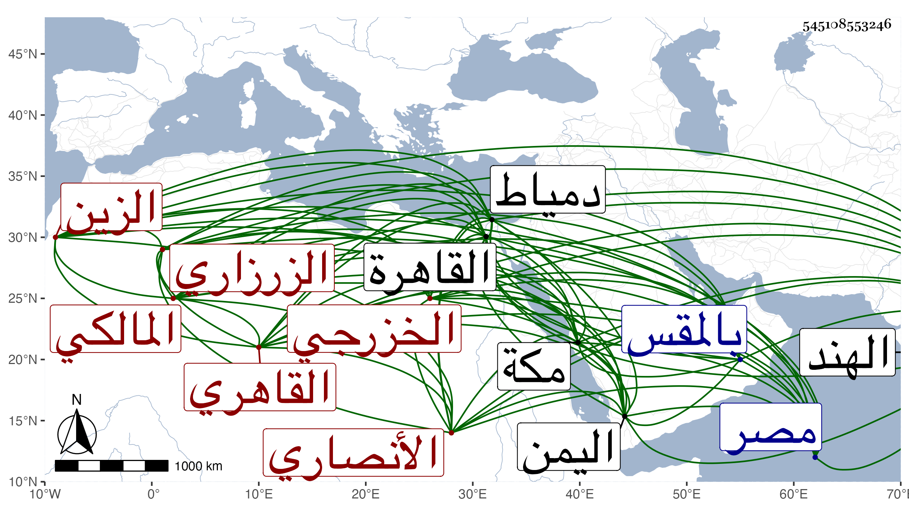

0902Sakhawi.DawLamic.ITO20230111-ara1.EIS1600.545108553246
Biography ID: 545108553246
66
عبادة بن علي بن صالح بن عبد المنعم بن سراج بن نجم بن فضل بن فهد بن عمرو الزين الأنصاري الخزرجي الزرزاري القاهري المالكي . ولد في جمادى الأولى سنة سبع وسبعين وسبعمائة بزرزرا من قرى مصر وقرأ بها القرآن ثم انتقل إلى القاهرة فحفظ كتبا وسمع الكثير على التنوخي وابن الشيخة والصلاح الزفتاوي والعزيز المليحي والشمس بن ياسين الجزولي والتاج بن الفصيح وابن أبي المجد والمطرز والنور الهوريني والشمس إمام الصرغتمشية والشهاب الجوجري والحلاوي والسويداوي وناصر الدين بن الفرات والشرف بن الكويك والسراج البلقيني والزين العراقي والهيثمي والتقي الدجوي والغماري والنور الابياري والجمال الرشيدي والشمس محمد ومريم إبنا الاذرعي وآخرون وتفقه بأخيه الشيخ نور الدين وبالتاج بهرام والجمال الاقفهسي وقاسم بن سعيد العقياني المغربي وكان يصفه بأنه من جلة العلماء والشهاب المغراوي والشمس الغماري وعنه أخذ العربية وغيرها وكذا أخذ العربية والاصلين والمعاني وكثيرا من العلوم عن العز بن جماعة وحضر أيضا عند البساطي والشهاب الصنهاجي واللغة عن الأبياري والحديث عن الزين العراقي والسراج البلقيني ولازم البدر الدماميني حتى أخذ عنه حاشيته على المغني ودخل صحبته اليمن في سنة تسع عشرة وفارقه لما توجه البدر إلى الهند وحج حينئذ وكان بمكة في سنة عشرين وعرض عليه بها حينئذ أبو الفرج بن المراغي بعض محافيظه ولازم الاشتغال حتى تقدم في الفقه والاصلين والعربية وشارك في غيرها وصار أحد أعيان مذهبه ونسخ بخطه الحسن الكثير ودرس للمالكية في الشيخونية بعد ابن تقي وفي البرقوقية بعد ابن عمار وفي الأشرفية برسباي من واقفها أول ما فتحت بعد أن كان الواقف رام الاقتصار فيها على الحنفية فقط ، وتصدى للتدريس والافتاء والافادة قديما وأخذ الناس عنه من أهل كل مذهب طبقة بعد أخرى وانتفعوا به في الفقه وأصوله والعربية وغيرها من الفنون مع حسن تربيته للطلبة وعدم مسامحته لهم بل يغلظ على من لم يرتض فهمه أو بحثه منهم إلى أن اشتهر ذكره وبعد صيته وعين لقضاء المالكية بعد موت البساطي فأبى وصمم مع إلحاحهم عليه على الامتناع ثم اختفى بعد قول كاتب السر له عن السلطان أنه يخبر أنه قد ولي السلطنة مغصوبا فهو أيضا يوليك مغصوبا فقال حتى أستخير الله ثم تسحب من وقته وسافر إلى دمياط فاختفى بها وكذا أقام عند الشيخ إبراهيم المتبولي مختفيا أياما حتى استقر البدر بن التنسي فظهر حينئذ ولم أعلم بعد البرهان الابناسي من أهل هذا القرن من شاركه في الصدق لعدم قبول القضاء غيره ثم انقطع إلى الله تعالى وأعرض عن الاجتماع بالناس بل والافتاء إلا باللفظ أحيانا وأقام عند الشيخ مدين في زاويته بالمقس مقبلا على شأنه منقطعا إلى العمل والعبادة في ازدياد من الخير والمحاسن حتى مات في يوم الجمعة سابع شوال سنة ست وأربعين وصلى عليه بالأزهر تقدم الناس الشيخ مدين المذكور وكثر التأسف على فقده ولم يخلف بعده في المالكية مثله وكان فصيحا طلق اللسان حسن التقرير علامة مبرزا في المعقول والمنقول صالحا خيرا زاهدا ورعا صلبا في الدين غاية في التقشف خصوصا في آخر أمره سالكا طريق السلف لا يتحاشى المشي على قدميه في ضروراته وغيرها معللا امتناع الركوب بما يترتب عليه من أمر المشاة ونحوهم بالاستناد له بغير ضرورة حتى يمر عليه أنس ووقار قليل الكلام إلا فيما يعنيه ومحاسنه كثيرة ، وكان يقول مشيرا لشدة أعباء التزويج على سبيل المماجنة : لو كانت الشركة تصح في الزوجات لشاركت في جزء من أربعة وعشرين جزءا وهو مسبوق بنحوه من الاوزاعي فإنه قال لصديق له ان استطعت أن تكتفي في هذا الزمان بنصف امرأة فافعل رويناه في معاشرة الاهلين لأبي عمر النوقاتي ، وقد حدث باليسير أخذ عنه أصحابنا واستشهد به شيخنا على من أنكر عليه حكايته عن البلقيني في تمتام كما حكيتها في الجواهر فقال كما قرأته بخطه وممن حضرها الشيخ زين الدين عبادة المالكي الشهير وقد كتبها بخطه بل ترجمه شيخنا في الانباء ترجمة جيدة فقال : الشيخ العالم العلامة المفنن رافقنا في السماع مدة ومهر في الفقه وغيره وصار بأخرة رأس المالكية وانقطع قبل موته بمديدة إلى الله تعالى ، وقال العيني أنه كان من أهل العلم والدين رحمه الله تعالى ونفعنا به .
